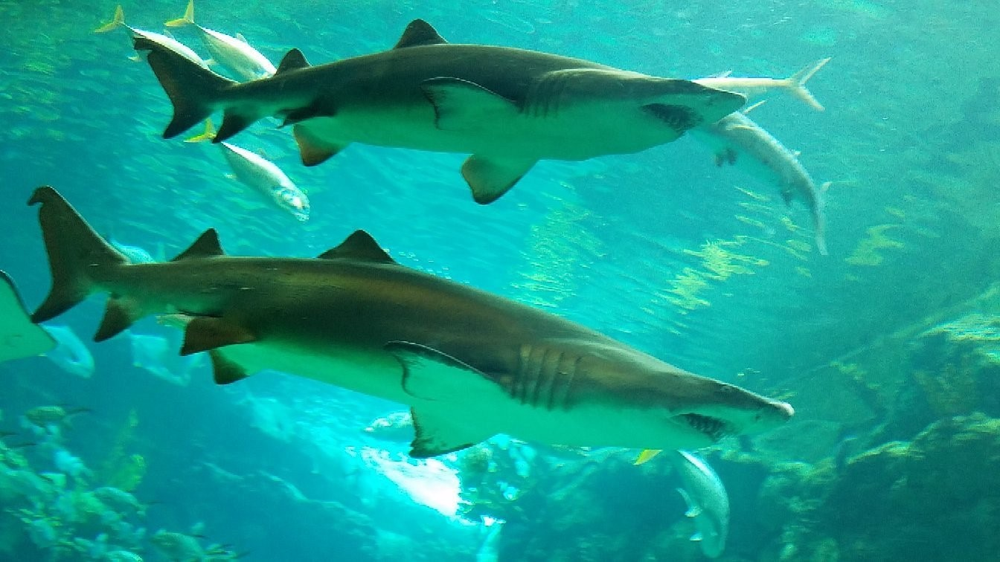
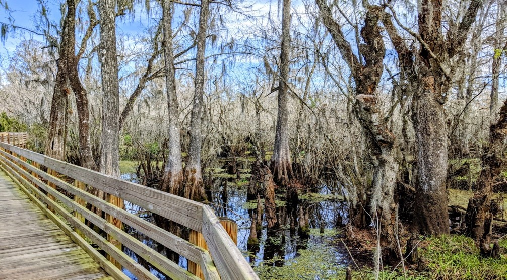
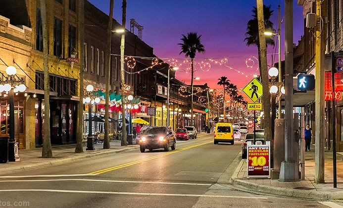
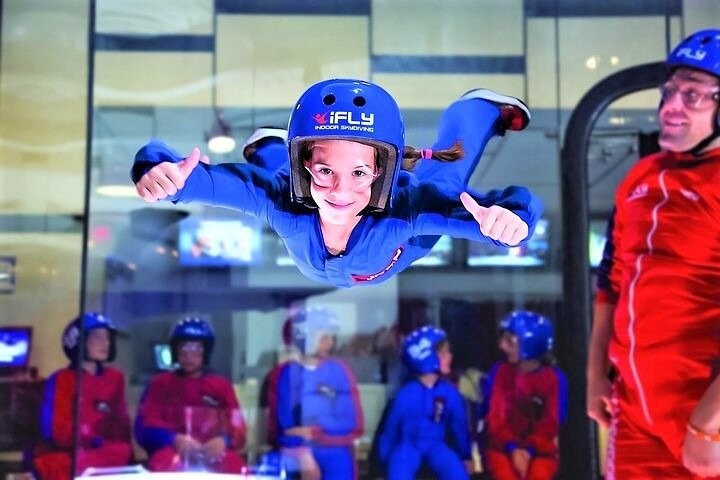

The Bob Graham Sunshine Skyway Bridge, often referred to as the Sunshine Skyway Bridge or simply the Skyway, is a cable-stayed bridge spanning the Lower Tampa Bay connecting St. Petersburg, Florida to Terra Ceia. The current Sunshine Skyway opened in 1987 and is the second bridge of that name on the site.
Address: 7508-7534 Sunshine Skyway Ln S, St. Petersburg, FL 33711
Tampa Riverwalk
The Tampa Riverwalk is a 2.6-mile-long (4.2 km) open space and pedestrian trail along the Hillsborough River in Tampa, Florida. The Riverwalk extends along most of the downtown Tampa waterfront from the Channelside District on the eastern terminus to the mouth of the Hillsborough River and then north along the riverside to Tampa Heights, forming a continuous path that connects a multitude of parks, attractions, public spaces, and hotels.
Address: Tampa Riverwalk, Tampa, FL 33602
Zoo Tampa at Lowry Park
Visit Zoo Tampa at Lowry Park for wildlife experience that includes native Florida animals as well as species from around the world. Check out the variety of habitats that are home to wildlife from Asia, Africa, Australia and more, where you can see apes, birds, tortoises, panthers, manatees, koalas… the list goes on. Plus, learn about endangered species and the zoo’s efforts in animal conservation.
For more information, visit this link.
Address: 1101 W Sligh Ave, Tampa, FL 33604
Florida Aquarium

The Florida Aquarium is one of the top aquariums in the country, with over 9,000 aquatic creatures, including sharks, otters, alligators and many more. Walk along the Wetlands Trail past alligator-infested waters to the river streams where otters play and explore. Then stroll along the Bays & Beaches habitats and touch a variety of different species of stingrays and sharks at a touch pool called Stingray Beach. Look for white-spotted bamboo sharks, southern rays and more. Check out Waves of Wonder, a colorful exhibit with unique jellies, colorful clownfish, a pacific octopus, and more. And don’t forget to check out the outdoor water fun zone for children called Splash Pad. Check out the one-of-a-kind view at the Coral Reef Gallery, one of the most beautiful and diverse ecosystems in the world.
For more information visit this link.
Address: 701 Channelside Dr, Tampa, FL 33602
Busch Gardens
As one of the largest zoos in North America, Busch Gardens Tampa provides an unforgettable experience for the entire family. The park is home to 12,000 animals representing more than 250 species. From alligators and elephants to hippos and hyenas, there is a huge variety of animals to see—and get close to. In fact, Busch Gardens brings guests face-to-face (literally) with more exotic and endangered species than any attraction outside of Africa. Fly above the trees on a zipline and try your strength in a tug of war with a Bengal tiger in Jungala. The park’s large collection of roller coasters makes it Florida’s top spot for thrill rides. Try SheiKra, the first dive coaster in the country. Upgrade this ticket to include admission to SeaWorld Orlando, a theme park offering more roller coasters, rides, shows, attractions and family-friendly activities for thrill-seekers and animal lovers alike. See dolphins, white beluga whales, and penguins. Plus visit Adventure Island Tampa or Aquatica, SeaWorld’s waterparks, with rivers to float in and enclosed tube slides. All-day parking and unlimited parking options are available for purchase.
For more information: visit this link.
Lettuce Park

Lettuce Lake Conservation Park is one of Hillsborough County's most visited parks. More than half of the park’s property lies in the natural floodplain of the Hillsborough River, consisting of a hardwood swamp forest. The remainder of the park consists of hardwood hammocks and pine flatwoods plant communities.
For more information: visit this link.
Address: 6920 East Fletcher Avenue Tampa, FL 33637
Ybor City

Lively Ybor City is known for boutiques and vintage shops on 7th Avenue, which also hosts Cuban and Latin American eateries. The Centro Ybor mall offers indie fast food, bars, and a cinema. Housed in a 1920s bakery, Ybor City State Museum has exhibits on the cigar industry and the area’s immigrant communities.
Address: 1600 E. 8th Avenue, Tampa, FL 33605
Clearwater Beach
White sand beach, turquoise waters of the Gulf of Mexico, a marina full of different boat tour options, a pier out into the water. This is the ultimate day to relax at a beach that has been rated #1 in the United States by many travel websites!
Address: Clearwater Beach, Causeway Blvd, Clearwater, FL 33767
Tampa Indoor SkyDiving

Discover what skydiving feels like without the throw-yourself-out-of-a-plane part during an indoor experience in Florida. At iFLY Tampa, you'll "fly" inside a vertical wind tunnel, which mimics the free-fall of skydiving. Training is provided, and no experience is required.
For more information visit this link.
Address: 10654 Palm River Rd, Tampa, FL 33619
Theme Parks in Orlando
The best theme parks in the world, Disney World and Universal Only, are only 1.5 hour away from USF campus. You can plan your visit from the following links: